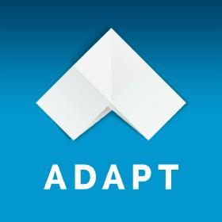
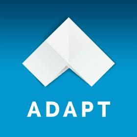
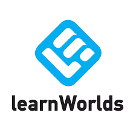
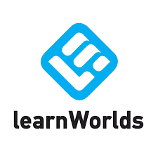
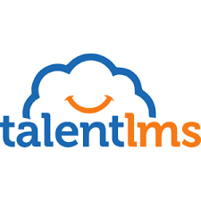
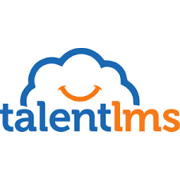

An E-learning platform is a virtual learning environment that provides tools, resources, and information to support education. It can be used by schools, universities, and other institutions to deliver courses, training programs, and other forms of distance education.
E-learning platforms can include:
Tools for interaction
Discussion forums, live chat, video conferencing, and online quizzes
Learning materials
Digital videos, courses, virtual documents, and interactive learning materials
Community building
Knowledge management features that create a virtual community of students, tutors, and professors
 


 

 

What is an eLearning System?
An electronic learning platform is an integrated set of interactive online services that provide trainers, learners, and others involved in education with information, tools, and resources to support and enhance education delivery and management. One type of eLearning software is a learning management system (LMS).
There are many companies out there that offer online learning platforms. Some of these virtual learning environment platforms allow you to host and sell online courses, allowing you to run your own business. Other platforms simply offer an interface in which users can interact with your content but might not be the best fit for your audience. So how do you decide which platform is the best to host your training courses?
In the end, you’re going to choose the platform that presents your course in the most engaging way for your learners. To help you decide how to differentiate between different LMS options, we’ve created a shortlist of the most important aspects to consider when choosing the right platform.
How to Choose the Best eLearning Platform
The purpose of a successful eLearning platform is that it creates a robust learning experience that feels like a classroom experience, offering the traditional classroom characteristics (like instructor-student interaction, Q&As, discussion, games, collaborative projects, quizzes, etc.) but either online or through a device (e.g. a laptop, desktop, tablet or mobile.) These important learning environments are achieved through a learning platform’s features and tools that create the level of interaction and engagement students need.
Learning Formats
Just as there are many learning styles for different types of learners, the online learning platform you choose should be able to host different content formats to address your learner’s specific learning styles. Some examples of content formats include articles, interviews, webinars, charts, PowerPoint presentations, simulations and video, but these are just a select few examples of content formats that can be used in eLearning.
Learning platforms should also include content modules, learning modules, evaluation modules, and communication modules. These modules allow for your training program to incorporate a variety of teaching styles for every learner, and allows for learners to boost their performance level and knowledge-retention levels.
Use Cases
It’s also important to consider any special requirements your eLearning platform will need in your business industry. For instance, if your company employees work remotely, you’ll need an eLearning platform that can be easily deployed to different devices, like mobile phones, tablets, and laptops. Or, if you’re in healthcare, your eLearning platform will likely need to be integrated into existing systems, like your hospital management system.
Questions to Ask About an eLearning Platform
Circling back to learning platforms, let’s look at some of the important questions to answer when assessing your LMS options and picking the best one for your needs.
Learners are the central, focal point of your training program, and understanding what they expect to achieve at the end of your training program should be your main goal. Do they want to learn a new skill, like a coding language, or do they want training in specific business process?
For example, if your organization is conducting a Human Resources compliance training program for employees across the globe, you would look for certain LMS functionalities like sequential course navigation, benchmark quizzes, display of course progress, etc. This type of business-wide training does not require a 1-on-1 personal interaction.
If your organization offers a specific training program that requires student-teacher interaction, like teaching foreign languages, or an online college course, an LMS that supports the process of custom course creation, tasking and uploading assignments, comments, etc. would best meet your learner’s needs.
Almost everyone carries their mobile phones with them at all times! No matter your industry, learners prefer to have accessibility to training content on-the-go, so that they can have complete flexibility of their self-learning cycle. Conduct research and see what percentage of learners within your industry would like to have training available to them “outside” of using a laptop or desktop. If the percentage is above 30%, you’ll want to make sure that the LMS you choose is compatible with mobile phones and optimized for remote education.
If you’re looking to consolidate the online learning experience for the user within one portal, it is important that your eLearning platform offer easy app or feature integrations so that the learner doesn’t have to repeat the same steps or can access other platforms within the same portal.
For example, an LMS feature that simplifies the user experience is the Single-sign-on (SSO). This feature allows the user to access other applications with the same credentials, without repeatedly logging in credentials on different apps within the same LMS.
In other words, an LMS that offers high-end features that do not meet the needs of your training program is a waste of money and time. Furthermore, the ultimate downfall of having an over complicated LMS is that it complicates the learning experience for the user and most likely leads to frustration and confusion.
Since an LMS is created to host courses and course content, this checkbox should be clearly marked as a “yes” when exploring different learning platforms. Some of the eLearning formats we mentioned above were audio, and video but also include PDFs, XML, MP3s, MP4s, SCORM, AICC, Tin Can, certificates and more. You will want to create a list of the content formats used in your courses and check that your preferred LMS supports them.
One of the more important details to pay attention to when choosing an LMS is how it handles sensitive information. A security breach could cost your organization its reputation and brand image. Ensuring that the LMS has the right security protocols, firewalls and SSL is vital in protecting your content and user’s personal data.
Whether you’re a small business, an enterprise, or wanting to start your own eLearning business, addressing these questions will ensure that you can find the best eLearning platform for your training program.
In addition to selecting the right learning platform for your training, your training material must appeal to your audiences so that your learners keep coming back. Understanding the eLearning development process is important for creating course content that is specific to your target learner.
Understanding eLearning Development
eLearning platforms are a new method of teaching distant audiences. They have their own design and development processes in creating effective teaching courses. eLearning development looks at adult learning principles, learning styles and instructional design principles.
What is eLearning Development?
eLearning development is the process of creating technology-based education. The term was originally used to define automated learning systems that allowed students to learn on their own time at their own speed via a computer. The term that proceeded eLearning was, in fact, computer-based training, or CBT.
Today eLearning encompasses many technologies used for the purposes of training and instruction. Simulations, gaming, mobile devices, GPS technologies, and many more can used for the development of eLearning experiences. They can also be blended together, creating a multimedia learning experience.
eLearning Developers Revolutionize the Learning Experience
With the new technologies available to us today, the term “eLearning” has come to be all-inclusive of any instruction delivered using technology. This would include a live instructor-led session delivered around the world via common tools like Webex, GoToMeeting, or other conference tools.
The development of eLearning content requires a mix of skills: project management, graphic design, instructional design, programming, media production, creative writing, translation, to name a few. While most eLearning developers begin their careers in other technical fields, some are tech savvy former school teachers applying their skills in the new field of eLearning development.
Specializing in only one area of eLearning development will limit one’s opportunities significantly. It is far better to have a solid understanding of all eLearning development skills required to produce instructional media.